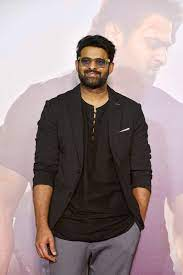
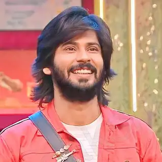

<!DOCTYPE html>
<html>

<head>
    <title>Nani</title>
</head>

</html>

<body>
    <h1>
        Prabhas
    </h1>
    <p>
        Uppalapati Venkata Suryanarayana Prabhas Raju ([pɾabʱaːs] born 23 October 1979) is an Indian actor who
        predominantly works in Telugu language films.[4] One of the highest-paid actors in Indian cinema,[5] Prabhas has
        featured in Forbes India's Celebrity 100 list since 2015[6][7][8] and has received seven Filmfare Awards
        nominations, a Nandi Award, and a SIIMA Award.

        Prabhas made his acting debut with the 2002 drama Eeswar, and later attained his breakthrough with the action
        romance Varsham (2004). His notable works include Chatrapathi (2005), Bujjigadu (2008), Billa (2009), Darling
        (2010), Mr. Perfect (2011), and Mirchi (2013), winning the Nandi Award for Best Actor for his performance in the
        lattermost.[9][
    </p>
    
    <h2>
        Allu arjun
    </h2>
    <p>
        Allu Arjun (born 8 April 1982) is an Indian actor known for his works mainly in Telugu cinema. One of the
        highest paid actors in India,[3] Allu Arjun is also known for his dancing skills.[4] He is a recipient of
        several awards including a National Film Award, six Filmfare Awards and three Nandi Awards.[5] He has appeared
        in Forbes India's Celebrity 100 list since 2014.[6] He is popularly referred to as "Stylish Star".

        Allu Arjun made his debut with Gangotri in 2003. He rose to prominence starring in Sukumar's cult classic Arya
        (2004) for which he earned a Nandi Special Jury Award.[7] He consolidated his reputation with the action films
        Bunny (2005) and Desamuduru (2007). In 2008, he starred in the romantic drama Parugu for which he won his first
        Filmfare Award for Best Actor – Telugu.[8]

        Allu Arjun went on to star in notable films such as Arya 2 (2009), Vedam (2010), Julayi (2012), Race Gurram
        (2014), S/O Satyamurthy (2015), Rudhramadevi

    </p>
    
    <h3>
        Varun Tej

    </h3>
    <p>
        Konidela Varun Tej (born 19 January 1990) is an Indian actor who works in Telugu films. Born in the
        Allu–Konidela family, Tej is the son of actor Nagendra Babu. Tej made his acting debut in 2014 with Mukunda.

        Tej received praise for featuring in Krish's critically acclaimed war film Kanche (2015). He established himself
        as a leading actor with the romantic drama Fidaa (2017), a major critical and commercial success. Tej has since
        starred in films including Tholi Prema (2018), Gaddalakonda Ganesh (2019), F2 (2019) and F3 (2022). Tej is
        married to his co-actor Lavanya Tripathi.

    </p>
    
    <h4>
        Chandrababu naidu
    </h4>
    <p>
        Nara Chandrababu Naidu (born 20 April 1950), also known as Chandrababu Naidu or CBN, is an Indian politician and
        the current Leader of Opposition in the Andhra Pradesh Legislative Assembly. He also served as Chief Minister
        from 1995 to 2004 and as Opposition Leader from 2004 to 2014 of Andhra Pradesh. He is the National President of
        the Telugu Desam Party (TDP).[2]

        Chandrababu Naidu was one of the most recognised Chief Ministers in the country during his nine-and-a-half-year
        tenure from 1995 to 2004.[3] He was a strong supporter of liberalisation policies at the state level.[4] The
        western media hailed him as "one of the most promising local leaders not just in India but in the developing
        world."[5] Andhra Pradesh was the first state in India to receive a direct World Bank loan for economic
        restructuring.[6] Naidu was a regular participant at World Economic Forum meetings in Davos, Switzerland.[7]

    </p>
    
    <h5>
        Jagan mohon Reddy
    </h5>
    <p>
        Yeduguri Sandinti Jagan Mohan Reddy (born 21 December 1972), also known as Y. S. Jagan or mononymously Jagan, is
        an Indian politician currently serving as the 17th Chief Minister of Andhra Pradesh. He is the founder and
        president of the Indian political party, YSR Congress Party (YSRCP). He is also the son of Y. S. Rajasekhara
        Reddy, former Chief Minister of Andhra Pradesh. Her Mother Y. S. Vijayamma, is the chairperson of YSR Congress
        Party.

        Jagan Mohan Reddy started his political career in the Indian National Congress and was elected as the Member of
        Parliament of Kadapa in 2009.[1] After his father's death due to helicopter crash in 2009, he started Odarpu
        Yatra (a consoling tour) across the state.[2] He then eventually came out of the Congress Party and established
        his own party, YSR Congress Party which also matches his father's acronym, Ysr

    </p>
    
    <h6>
        Amardeep
    </h6>
    <p>
        Amardeep Chowdary was born on 20 November 1990 in Ananthpur, Andhrapradesh, India. He is an actor, known for
        Raju Gari Kidnap (2020), Iravatham (2022) and Abhilasha (2023). He has been married to Tejaswini Gowda since 14        December 2022. BornNovember 20


    </p>
    


</body>